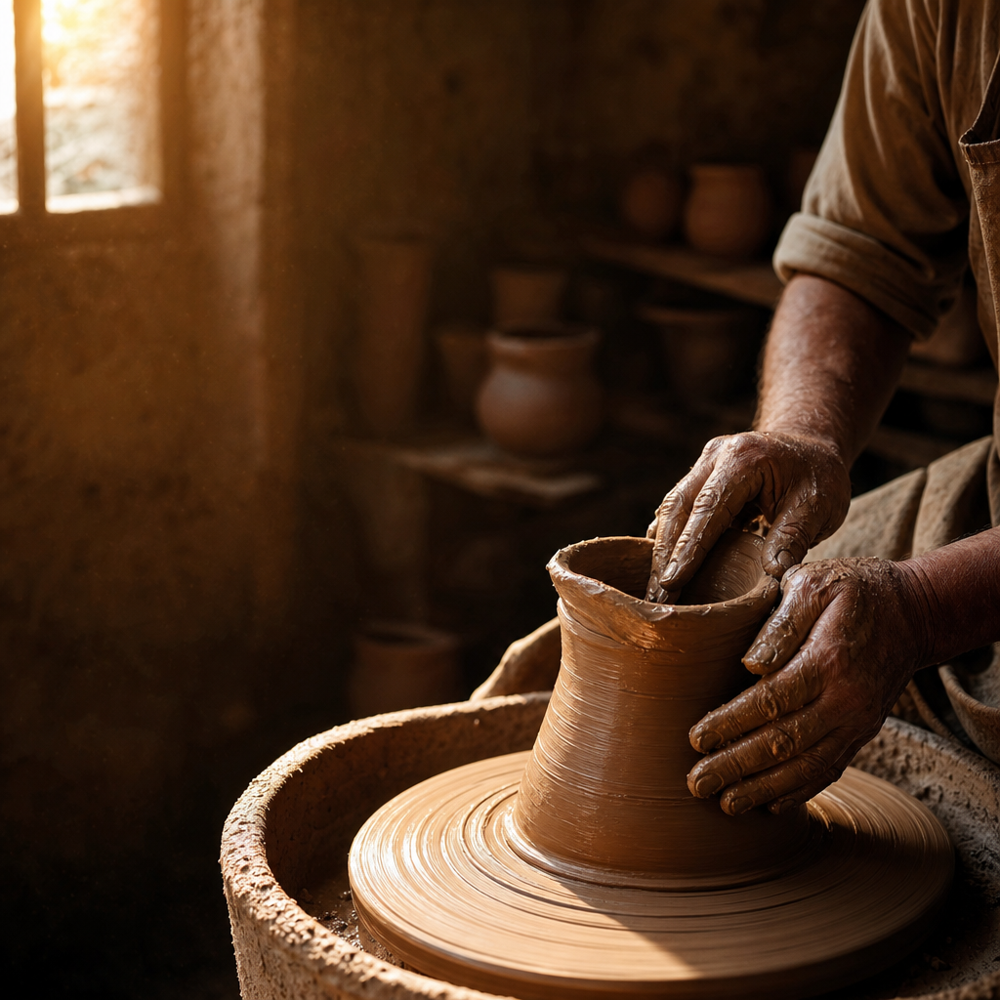

단 한 번의 실수로 모든 게 끝났다고 느껴 본 적이 있으신가요? 중요한 시험에서 떨어졌을 때, 어렵게 잡은 기회를 스스로 망쳐버렸을 때, 관계를 회복할 수 없을 만큼 상처 냈을 때 — 우리는 종종 이렇게 생각합니다. "이제 끝났다. 다시는 되돌릴 수 없다." 그런데 정말 그럴까요? 인생에 두 번째 기회라는 것이, 정말 존재하기는 하는 걸까요?
우리는 왜 실패를 이렇게 두려워할까
생각해 보면 우리가 사는 세상은 실패에 유난히 박한 편입니다. 오디션 프로그램은 "단 한 번의 기회"를 강조하고, 입시와 취업은 몇 번의 시험으로 사람을 줄 세웁니다. 한 번 미끄러지면 다시는 그 줄에 설 수 없을 것 같은 불안이, 우리 마음 깊숙이 자리 잡고 있습니다.
그런데 정작 우리가 "성공했다"고 부르는 사람들의 이야기를 들여다보면, 그 뒤에는 언제나 숱한 실패가 깔려 있습니다. 발명가 에디슨은 제대로 작동하는 전구를 만들기까지 수많은 실패를 거듭했고, 그때마다 "이건 안 되는 방법을 하나 알아낸 것"이라고 말했다고 전해집니다. 처음 한 번에 완성되는 성공은, 사실 거의 없습니다. 문제는 실패 자체가 아니라, 그 실패 이후에 다시 기회가 주어지느냐는 것입니다.
고대의 이미지 하나, 토기장이와 진흙
이 질문에 대해 아주 오래된 텍스트 하나가 뜻밖의 답을 건넵니다. 지금으로부터 이천육백 년도 더 전, 멸망을 앞둔 작은 나라 유다에 예레미야라는 사람이 있었습니다. 그는 계속해서 "돌이키라"고 외쳤지만, 사람들은 듣지 않았습니다. 그러던 어느 날, 하나님은 예레미야에게 말이 아니라 장면 하나를 보여 주십니다. 토기장이의 작업실로 가 보라는 것이었습니다.
예레미야가 내려가 보니, 토기장이가 물레 위에서 그릇을 빚고 있었습니다. 그런데 빚던 그릇이 손에서 그만 터져 찌그러지고 맙니다. 여기서 우리가 예상하는 장면은, 그 흙을 던져 버리고 새 흙을 가져오는 모습일 것입니다. 그런데 성경은 이렇게 기록합니다.
"진흙으로 만든 그릇이 토기장이의 손에서 터지매 그가 그것으로 자기 의견에 좋은 대로 다른 그릇을 만들더라." (예레미야 18장 4절)
토기장이는 찌그러진 그 흙을 버리지 않았습니다. 새 재료를 쓰지 않고, 실패한 바로 그 진흙을 다시 치대어 다른 그릇을 빚었습니다. 하나님은 이 장면을 보여 주신 뒤 이렇게 말씀하십니다. "이스라엘 족속아, 진흙이 토기장이의 손에 있음 같이 너희가 내 손에 있느니라." 실패한 국가, 말을 듣지 않는 백성을 향해 하나님이 하신 말씀이었습니다. 계획대로 되지 않았다고 해서, 재료 자체를 폐기하는 분이 아니라는 뜻이었습니다.
성경 전체를 관통하는 하나의 그림
흥미로운 건, 이 이미지가 예레미야 한 사람의 것으로 끝나지 않는다는 점입니다. 예레미야보다 육백 년쯤 뒤, 신약의 사도 바울도 같은 이미지를 다시 꺼내 듭니다.
"토기장이가 진흙 한 덩이로 하나는 귀히 쓸 그릇을, 하나는 천히 쓸 그릇을 만들 권한이 없느냐." (로마서 9장 21절)
시대도, 상황도, 글의 목적도 전혀 다른 두 사람이 똑같이 '토기장이와 진흙'이라는 이미지를 붙잡았다는 것은 우연이 아닙니다. 오래된 신앙 공동체가 하나님과 인간의 관계를 설명할 때, 가장 먼저 떠올린 그림이 바로 이것이었다는 뜻입니다. 만드는 이와 만들어지는 것의 관계. 그리고 그 관계 안에는 언제나, 다시 빚을 여지가 남아 있었습니다.
도망친 사람에게도 반복된 기회
같은 성경 안에는 이 원리를 몸으로 보여 준 인물도 있습니다. 요나라는 사람입니다. 하나님이 그에게 니느웨로 가서 경고를 전하라 하셨을 때, 요나는 정반대 방향으로 도망쳤습니다. 그것도 원수의 나라가 잘되는 꼴을 보기 싫다는, 지극히 인간적인 이유 때문이었습니다. 풍랑을 만나 바다에 던져지고, 큰 물고기 뱃속에서 사흘을 보낸 뒤에야 그는 정신을 차립니다.
그런데 정작 놀라운 부분은 그다음입니다. 하나님은 도망쳤던 요나를 벌하고 끝내는 대신, 똑같은 명령을 "두 번째로" 다시 내리십니다. 한 번 도망친 사람에게 다시 사명을 맡기는 것 — 이것 역시 찌그러진 그릇을 다시 치대는 토기장이의 손과 정확히 같은 동작입니다.

찌그러진 그릇도 다시 빚으시는 이유
이 오래된 이미지가 지금 우리에게 건네는 말은 생각보다 단순합니다. 첫 시도가 계획대로 되지 않았다는 것이, 그 사람 전체가 폐기되었다는 뜻은 아니라는 것입니다. 토기장이가 굳이 찌그러진 흙을 다시 쓴 이유는, 그 흙이 아직 쓸 만해서가 아니라 — 애초에 그 재료를 아끼는 손이 있었기 때문입니다. 실패는 재료의 결함을 드러낼 뿐, 그 재료를 아끼는 손의 마음까지 바꾸지는 못합니다.
우리는 대개 실패를 결과로만 봅니다. 무너진 시험, 깨진 관계, 놓친 기회. 하지만 이 오래된 이야기는 실패를 과정의 한 지점으로 보라고 말합니다. 찌그러짐은 끝이 아니라, 다시 빚어지는 중간 단계일 수 있다는 것입니다. 물론 이것이 실패해도 괜찮다는 안일한 위로는 아닙니다. 다만 한 번의 실패가 곧 존재 전체의 폐기 선언은 아니라는, 조금 더 근본적인 위로에 가깝습니다.
지금, 이미 늦었다고 느끼신다면
혹시 지금 어떤 이유로든 "나는 이미 늦었다", "이미 망쳤다"고 여기고 계신다면, 예레미야가 지켜보았던 그 물레의 장면을 한번 떠올려 보시면 좋겠습니다. 손에서 무언가 터지고 찌그러지는 그 순간에도, 그것을 던져 버리지 않고 다시 치대는 손이 있었다는 것을요. 우리 삶에 정말 두 번째 기회가 있는지 없는지는, 어쩌면 우리가 결정할 문제가 아닐지도 모릅니다. 다만 그 손이 아직 우리를 놓지 않았다는 사실만큼은, 오래전부터 지금까지 같은 이야기로 반복해서 전해지고 있습니다.
이 글을 읽는 지금, 잠시 자신의 삶을 돌아보셨으면 합니다. 스스로 "이미 끝났다"고 선언해 버린 일이 있다면, 그것은 정말 끝난 것일까요, 아니면 아직 다시 치대어지는 중인 것은 아닐까요. 그리고 지금 나에게 다시 주어진 기회가 있다면, 나는 그것을 알아보고 붙잡을 준비가 되어 있을까요.
"여호와의 인자와 긍휼이 무궁하시므로 우리가 진멸되지 아니함이니이다. 이것이 아침마다 새로우니 주의 성실하심이 크시도소이다." (예레미야애가 3장 22~23절)